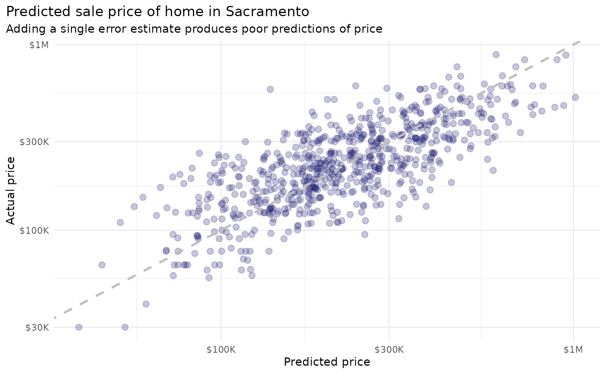
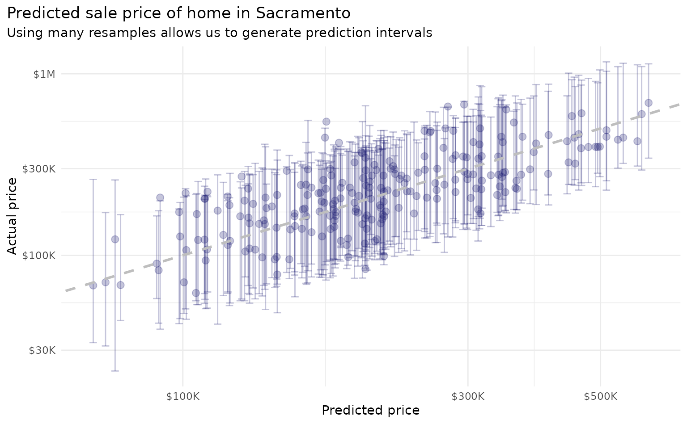

The Math Behind workboots
Source:vignettes/The-Math-Behind-workboots.Rmd
The-Math-Behind-workboots.RmdGenerating prediction intervals with workboots hinges on a few core concepts: bootstrap resampling, estimating prediction error for each resample, and aggregating the resampled prediction errors for each observation. The bootstraps() documentation from {rsample} gives a concise definition of bootstrap resampling:
A bootstrap sample is a sample that is the same size as the original data set that is made using replacement. This results in analysis samples that have multiple replicates of some of the original rows of the data. The assessment set is defined as the rows of the original data that were not included in the bootstrap sample. This is often referred to as the “out-of-bag” (OOB) sample.
This vignette will walk through the details of estimating and aggregating prediction errors — additional resources can be found in Davison and Hinkley’s book, Bootstrap Methods and their Application, or Efron and Tibshirani’s paper, Improvements on Cross-Validation: The Bootstrap .632+ Method.
The Bootstrap .632+ Method
What follows here is largely a summary of this explanation of the .632+ error rate by Benjamin Deonovic.
When working with bootstrap resamples of a dataset, there are two error estimates we can work with: the bootstrap training error and the out-of-bag (oob) error. Using the Sacramento housing dataset, we can estimate the training and oob error for a single bootstrap.
sacramento_boots
#> # Bootstrap sampling
#> # A tibble: 1 × 2
#> splits id
#> <list> <chr>
#> 1 <split [699/261]> Bootstrap1Using a k-nearest-neighbor regression model and rmse as our error metric, we find that the training and oob error differ, with the training error lesser than the oob error.
sacramento_train_err
#> [1] 0.08979873
sacramento_oob_err
#> [1] 0.1661675The training error is overly optimistic in the model’s performance and likely to under-estimate the prediction error. We are interested in the model’s performance on new data. The oob error, on the other hand, is likely to over-estimate the prediction error! This is due to non-distinct observations in the bootstrap sample that results from sampling with replacement. Given that the average number of distinct observations in a bootstrap training set is about 0.632 * total_observations, Efron and Tibshirani proposed a blend of the training and oob error with the 0.632 estimate:
\[\begin{align*} Err_{.632} & = 0.368 Err_{train} + 0.632 Err_{oob} \end{align*}\]
sacramento_632 <- 0.368 * sacramento_train_err + 0.632 * sacramento_oob_err
sacramento_632
#> [1] 0.1380638If, however, the model is highly overfit to the bootstrap training set, the training error will approach 0 and the 0.632 estimate will under estimate the prediction error.
An example from Applied Predictive Modeling shows that as model complexity increases, the reported resample accuracy by the 0.632 estimate continues to increase whereas other resampling strategies report diminishing returns:

As an alternative to the 0.632 estimate, Efron & Tibshirani also propose the 0.632+ estimate, which re-weights the blend of training and oob error based on the model overfit rate:
\[\begin{align*} Err_{0.632+} & = (1 - w) Err_{train} + w Err_{oob} \\ \\ w & = \frac{0.632}{1 - 0.368 R} \\ \\ R & = \frac{Err_{oob} - Err_{train}}{\gamma - Err_{train}} \end{align*}\]
Here, \(R\) represents the overfit rate and \(\gamma\) is the no-information error rate, estimated by evaulating all combinations of predictions and actual values in the bootstrap training set.
sacramento_632_plus <- (1 - w) * sacramento_train_err + w * sacramento_oob_err
sacramento_632_plus
#> [1] 0.1450502When there is no overfitting (i.e., \(R = 0\)) the 0.632+ estimate will equal the 0.632 estimate. In this case, however, the model is overfitting the training set and the 0.632+ error estimate is pushed a bit closer to the oob error.
Prediction intervals with many bootstraps
For an unbiased estimator, rmse is the standard deviation of the residuals. With this in mind, we can modify our predictions to include a sample from the residual distribution (for more information, see Algorithm 6.4 from Davison and Hinkley’s Bootstrap Methods and their Application):
set.seed(999)
resid_train_add <- rnorm(length(preds_train), 0, sacramento_632_plus)
preds_train_mod <- preds_train + resid_train_addThus far, we’ve been working with a single bootstrap resample. When working with a single bootstrap resample, adding this residual term gives a pretty poor estimate for each observation:

With workboots, however, we can repeat this process over many bootstrap datasets to generate a prediction distribution for each observation:
library(workboots)
# fit and predict price in sacramento_test from 100 models
# the default number of resamples is 2000 - dropping here to speed up knitting
set.seed(555)
sacramento_pred_int <-
sacramento_wf %>%
predict_boots(
n = 100,
training_data = sacramento_train,
new_data = sacramento_test
)
This methodology produces prediction distributions that are consistent with what we might expect from linear models while making no assumptions about model type (i.e., we can use a non-parametric model; in this case, a k-nearest neighbors regression).